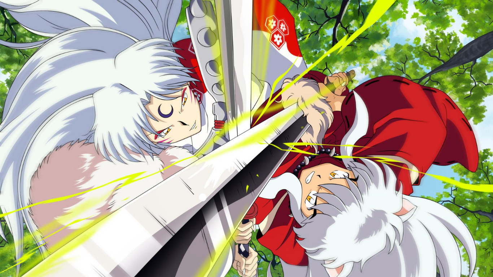

InuYasha
9.5 / 10
Based on the Shogakukan award-winning manga of the same name, InuYasha follows Kagome Higurashi, a fifteen-year-old girl whose normal life ends when a demon drags her into a cursed well on the grounds of her family's Shinto shrine. Instead of hitting the bottom of the well, Kagome ends up 500 years in the past during Japan's violent Sengoku period with the demon's true target, a wish-granting jewel called the Shikon Jewel, reborn inside of her.
Studio : Sunrise
Type : TV Series
Release date : October 16, 2000